AI01 / Case study
a duty manager that never sleeps
AI General Manager Ltd × Lune Brew Co., live placement
or scroll to unfold
a Vietnamese AI consultant
Decision-focused AI, from problem framing to adoption.
How I got here
I spent four years inside top-five ad agencies learning how a business actually decides. Then I came to Lancaster to learn how to build the systems that inform those decisions. Now I do both: I reframe a vague business problem as a concrete AI task, build the model, and design it so the people who didn’t commission it will still trust it and use it.
Business understanding, applied machine learning, and human adoption.(02) / things i made
A few entry points into the work.
(03) / selected work
Four projects that connect commercial decisions, creative thinking and applied AI.
AI01 / Case study
AI General Manager Ltd × Lune Brew Co., live placement
AI02 / Case study
The Co-operative Group, 2,500-store context
what-a-croissant-taught-a-model.mp4(04) / the practice
I work from the business decision through to the model and the people who will use it.
Turn a business question into an AI task worth building.
Working models and agents, each one tested against a simple baseline.
Designed so non-technical teams actually use it.
(05) / in motion
(06) / who i did it for
brands i've advised, built campaigns for, and shipped AI into: FMCG, retail, finance, hospitality.
The collection / Selected projects
Business problems, creative reframings and AI systems.
AI General Manager Ltd × Lune Brew Co., live placement
Samsung Bespoke, "Đẹp Đi Đừng Đợi"
The Co-operative Group, 2,500-store context
Beck's Ice (AB InBev), "Spill It Real"
Beck's Ice, "Summer 2022 / Có Chuyện Cùng Chill"
SCC.452, multi-agent research
SCC.456, solo build, ~4,000 LOC
Aqua Heatpump, Táo Quân 2025
8 projects
The person behind the practice
I’m Nam, an MSc Artificial Intelligence student at Lancaster (81.9% average, Distinction-level) who got here the long way round. Four years in advertising taught me what a business actually decides and why, across Samsung, Beck’s, Techcombank and a wall of FMCG brands; the MSc taught me to build the systems behind those decisions. I’m most useful in the gap between them: turning a stakeholder’s vague worry into something a model can answer, then making the answer legible enough to act on.
How I work with people
I read a project as a system of people, not just parts. My top strength (Connectedness) is why I notice the store manager who quietly overrides the model, and treat that as a design problem, not a training problem.
I filter signal from a fast-moving field and bring back what's useful. At Dentsu I was "the first to show the team a new tool"; the same reflex now runs across LangChain, CrewAI, MCP.
I lead the human side of a rollout. I built a training plan that took two interns to Account Executive. Adoption is a deliverable, not an afterthought.
I represent Lancaster’s School of Computing & Communications to prospective students and visitors: the same job as a discovery workshop: translating a complex offer for people deciding whether to buy in.
External Relations Team Leader, FTU Youth Union: secured VND 40M sponsorship; led the team for the campus’s flagship events.
Secured VND 40M sponsorship and led the team for the campus’s flagship events.
Notes / Learning in progress
Certifications and continued learning.
DeepLearning.AI
DeepLearning.AI
Anthropic Academy
Imperial College London
IBM
UC Davis
In progress: AWS AI Practitioner (AIF-C01)
Project / Strategy & practice
(AI05)SCC.451, representation learning
DinoV2 vs ResNet-50
UMAP + Linear Fine-Tuning
Bayesian Quantile Clustering
99.87% @ 53x faster
A beautiful fridge became a reason to stop waiting for a beautiful home.
My role: Senior Account Executive
Samsung × Dentsu Redder
A global flagship was struggling to find its place in Vietnam. Modularity, personalisation and technology asked practical fridge buyers to value benefits that still felt like nice-to-haves. After two years, the brief was to justify Bespoke’s value and unlock substantial growth.
Lead with what the refrigerator can become.
Lead with how it expresses its owner.
Lead with the improvement people can see immediately.
Đợi sửa nhà rồi
mua tủ lạnh đẹp.
We challenged the order of that decision. Choose the beautiful refrigerator now, and let it become the starting point for a better-looking home.
“Đẹp đi đừng đợi” gave Bespoke a simple invitation: enjoy a more beautiful everyday life from the moment you choose it. The campaign then gave each touchpoint a distinct job—create desire, demonstrate the fit, and give that desire a life in public.
The executions worked as a connected system. Each moved a different barrier between seeing Bespoke and wanting it in your own home.
The localised product film with Tóc Tiên made the refrigerator a lifestyle choice. Beauty led the story; design and functionality gave it substance.
Samsung campaign postAR answered a practical objection to an emotional promise. People could place Bespoke in their existing kitchen, explore colours and models, and see the space change before buying a refrigerator.
The contest turned that private trial into public participation: capture the virtual kitchen, submit the image, and share it socially for additional credit. A real refrigerator was the prize.
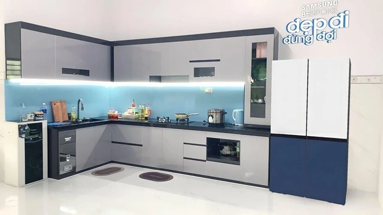
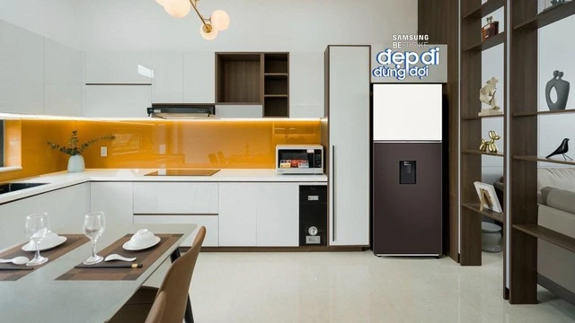
Consumer entries from the 2023 AR contest. Published entry gallery / Kênh14
Point the camera at your existing kitchen.
Choose the model, colour, position and angle.
Save a picture of the virtual Bespoke kitchen.
Enter the contest and show the idea socially.
The CGI metro films transformed familiar city scenes into a parade of Bespoke kitchens. Spectacle earned the attention; the beauty of each space kept the product at the centre.
A familiar city landmark becomes a moving gallery of beautiful kitchens.
Original Facebook filmThe station setting brings the same invitation into the everyday commute.
Original Facebook filmSamsung’s launch imagery brought giant Bespoke refrigerators to Hà Nội, Đà Nẵng, Sài Gòn and Cần Thơ. Different colours and local landmarks made the same beauty-first idea instantly recognisable.
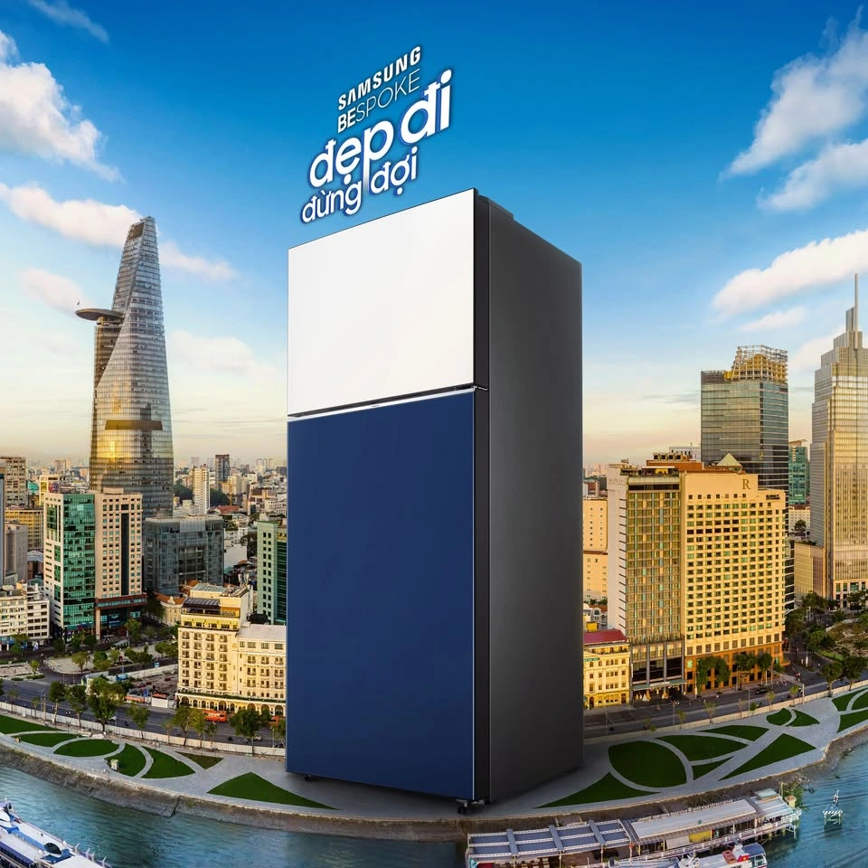
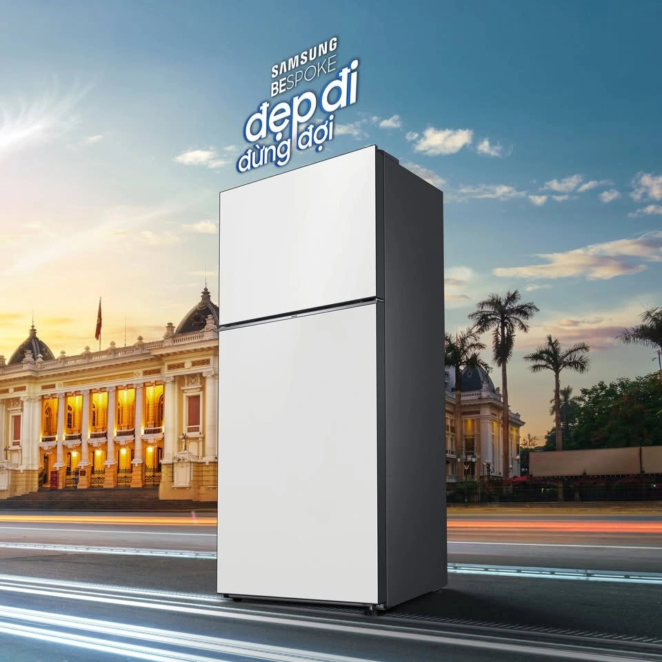
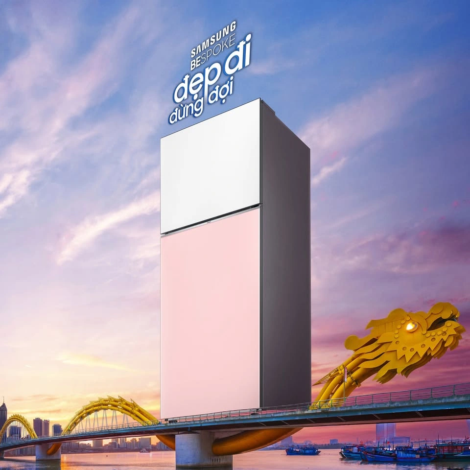
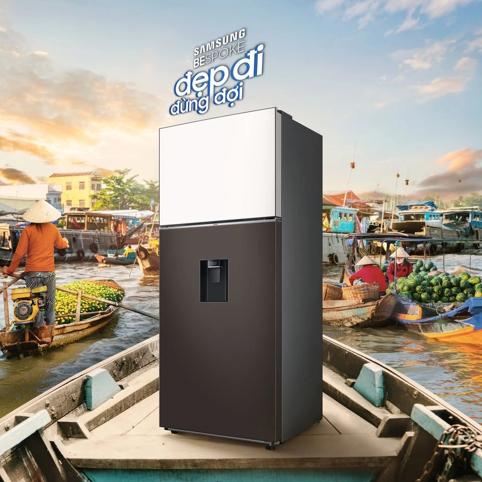
Original Samsung four-city showcase / 18 July 2023 · Campaign imagery; the metro films are CGI executions.
The 2024 Bespoke Be Home design competition extended the invitation to architects and interior designers. Bespoke became part of complete kitchen concepts, carrying “Đẹp đi đừng đợi” beyond a single refrigerator launch.
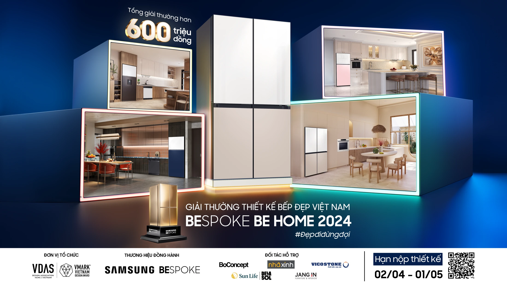
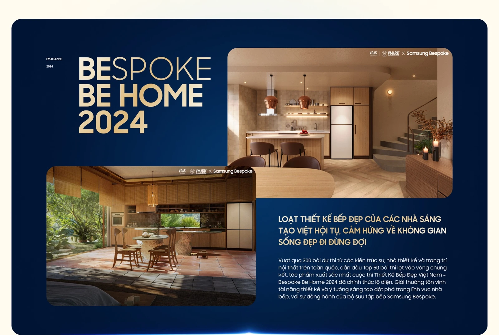
Participants built kitchen concepts with the Bespoke refrigerator and coordinated appliances. Fifty finalist designs became a public collection through voting, editorial exposure, exhibition and a photobook.
The awards night brought the kitchen concepts into a shared experience: an exhibition, a stage for the winning designers, and a room of people shaping Vietnam’s homes.
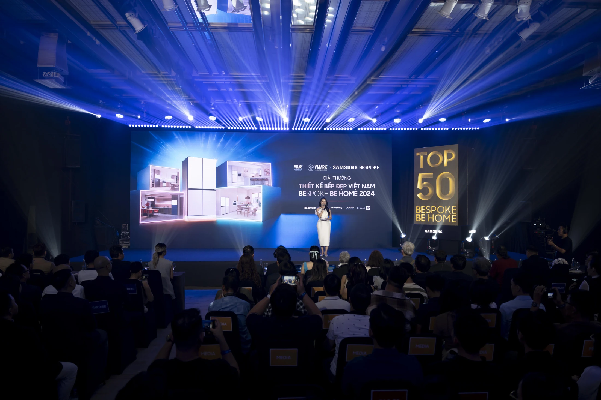
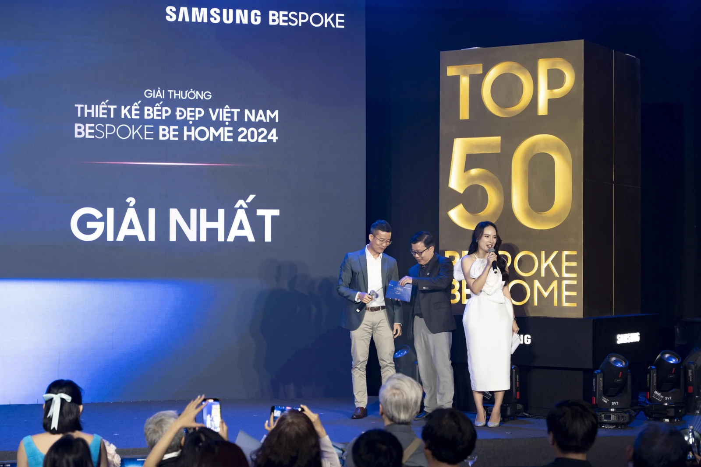
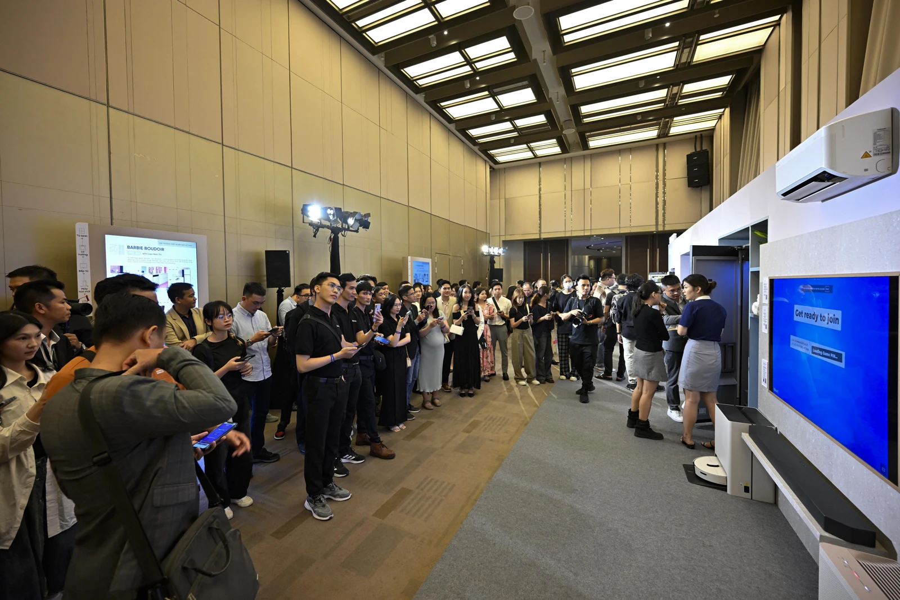
Photos: Vietnam Design Week / VDAS
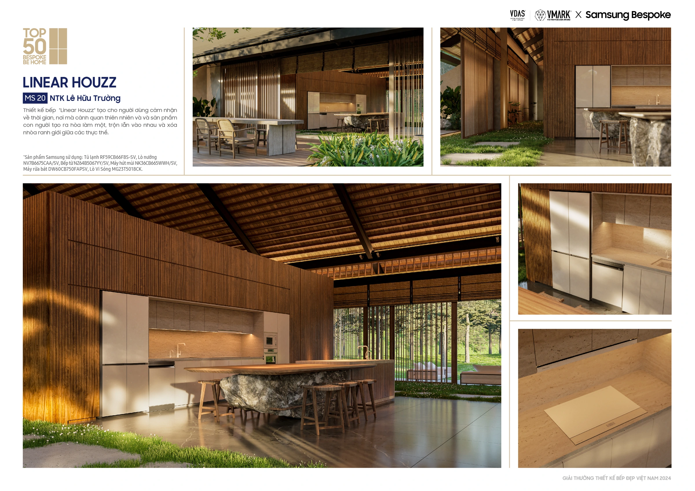
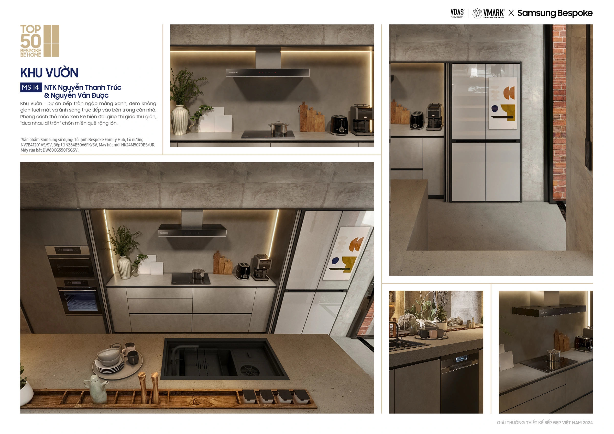
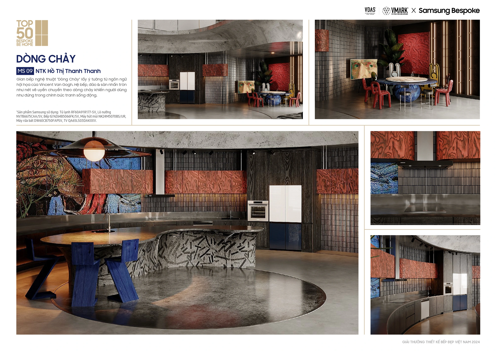
Bespoke Be Home 2024 / Samsung Newsroom / 26 June 2024.
2023 campaign recap. Social asset results cover the first five days.
Samsung’s most effective video ad of 2021–2023 in the campaign recap, ranking #1 for likes, shares and comments on its channel.
Reported figures vary by source and measurement window. Engagement measures are not additive. Published BSI case and its reported KPIs
The strategic move was to find an accessible reason to want an advanced product. The execution made that reason visible, testable in someone’s own home and shareable in public.
That is the thread I carry into consulting: frame the decision around human value, give each touchpoint a job, and connect the experience to a business outcome.
Creative agency: Dentsu Redder. Media agency: Constellation Groupe. My role: Senior Account Executive.
2023 sources: Samsung’s product film and brand posts; the AR contest and entry coverage; the BSI campaign cases. 2024 sources: VDAS–VMARK competition materials and designer coverage. The 2024 competition is evidence of the platform’s continuation.
Project / Strategy & practice
(AI06)SCC.457, finance AI survey
RNN→Transformer→LLM
volatility, noise, non-stationarity
regression, directional, risk-adjusted
AI security + sustainable AI
This group research survey asks how different neural architectures handle volatile, noisy and changing financial data. We compare their representations, the datasets they use and the measures used to judge them.
| Family | What the survey examines |
|---|---|
| RNN, LSTM, GRU | Learning dependencies across price histories |
| CNN and hybrid CNN–LSTM | Extracting local patterns from sequences and image encodings |
| GAN | Generating data and modelling market uncertainty |
| GNN | Representing relationships between stocks, sectors and other entities |
| Transformer | Long histories, changing distributions and multimodal inputs |
| LLM | Financial language, sentiment and reprogramming numerical series |
The project maps existing approaches. The diagrams show architectures examined in the literature, rather than a trading system deployed by our team.
Price histories, relationships between assets and financial language expose different information. A CNN–LSTM combines local feature extraction with temporal modelling. Informer tackles long sequences. TIME-LLM aligns numerical patches with the representations of a frozen language model.
The survey separates numerical forecasting, directional classification and ranking. MSE, RMSE and MAE measure prediction error. Directional accuracy and F1 measure movement signals. NDCG and MRR measure ranked outputs.
Financial utility needs another lens. The deck examines Sharpe Ratio and Return Ratio alongside those statistical measures, because a lower prediction error alone does not establish a useful trading strategy.
This case presents a research survey and evaluation framework. The research survey does not report a portfolio return achieved by this project.
Our synthesis groups the open challenges around representation, interpretability, changing market conditions and evaluation. Those concerns connect model selection to deployment: a method must keep working when the market shifts, and its outputs must support scrutiny.
The future-work section examines continual learning, structured state-space models, multimodal representations and financial benchmarking. Each responds to a specific limitation in the survey.
Project source: SCC.457 presentation, Group 6-b, March 2026. Selected diagrams from slides 9, 19, 25, 31, 33 and 37.
Project / AI & research
(AI03)SCC.452, multi-agent research
Coach–Player
agent logic + prompts from scratch
LangGraph, CrewAI patterns, ACP/MCP
55%→74% win rate
Project / AI & research
(AI04)SCC.456, solo build, ~4,000 LOC
Original animated examples from the presentation. Experiment 1 uses 40 prompts, ten scenes and four movements at 512 × 512.
3-way camera-motion comparison
optical flow + CLIP + blind human (3 raters)
42-line attention patch for 12GB
distinct capability-cost spectrum
Commercial video needs deliberate camera movement. I compared the control available from a written prompt, a learned motion adapter and a geometry-conditioned model, using the campus GPU as the production constraint.
MotionLoRA was tested against AnimateDiff V2 with SD 1.5. CameraCtrl was tested against its own AnimateDiff V3 baseline with eleven RealEstate10K trajectories at 256 × 384. I removed camera-direction text from the adapter conditions to isolate their effect.
The two experiments use different model versions and resolutions. The percentage changes below are relative to each method’s own baseline.
MotionLoRA produced a large increase in movement and more consistent direction. Direction standard deviation fell from 19.05° to 15.21°. All twenty zoom examples had the expected radial sign.
CameraCtrl reduced optical-flow magnitude by 59.6% while changing radial divergence from −0.24 to +2.52. It produced depth-aware forward translation rather than simply amplifying visible motion. CLIP coherence increased from 0.9381 to 0.9603.
Original examples from Experiment 2, at 256 × 384. Compare this pair within the V3 experiment.
The method used 11.6 GB of GPU memory, about 97% of the available budget, and required patching the attention kernel to fit. That setup cost changes when the added control is useful.
The human evaluation recognised the motion more reliably with both adapters. MotionLoRA offered dramatic single-axis direction at a modest resource cost. CameraCtrl offered a different capability: a camera moving through a three-dimensional scene.
| Measure | Text baseline | MotionLoRA | CameraCtrl |
|---|---|---|---|
| Correct movement identification | 6.7% | 86.7% | 100% |
| Motion strength, /5 | 1.47 | 3.60 | 3.60 |
| Visual coherence, /5 | 2.27 | 2.57 | 3.00 |
Three evaluators reviewed thirty videos, giving ninety judgements. This is a small evaluation sample.
| Measure | Text-only | MotionLoRA | CameraCtrl |
|---|---|---|---|
| GPU memory | 4.01 GB | 4.59 GB | 11.6 GB |
| Time per video | 74.6 s | 82.2 s | 84.6 s |
| Adapter size | 0 MB | 77 MB | 500 MB |
| Resolution | 512 × 512 | 512 × 512 | 256 × 384 |
Runtime and resolution come from the reported experiments. They are not a matched-resolution benchmark across all three methods.
A follow-up comparison should match resolution, test more dramatic synthetic trajectories and involve more evaluators. Those changes would help separate geometric control from perceived motion strength.
Project source: camera-control presentation, slides 3–9. The clips and evaluation plots are extracted from that deck.
Advertising / Cultural strategy & cross-channel execution
turning the pressure of a perfect Tết into a stage for honest expression
01 / Cultural tension
After a difficult 2021, Vietnamese youth had plenty to get off their chest. But around Tết, negative words can be read as an invitation to bad luck. The festive expectation to be cheerful made honest expression harder.
Beck’s Ice needed a place in that conversation: a beer brand could create permission to open up, rather than repeat another perfect-new-year message.
Reframe honesty as creativity, not complaint.
Give people a language, a soundtrack and a way to join in.
My contribution · Cross-channel analytics that informed the campaign strategy and connected cultural participation with commercial outcomes.
02 / One idea, several ways to participate
Spill It Real invited Vietnamese youth to open up about a difficult 2021. Music, stickers, social participation and a live tech rave turned that invitation into a shared space for creativity, with Beck’s Ice at its centre.
Artist-led stickers make the attitude portable.
The MV turns an everyday tension into entertainment.
Dance crews and culture pages carry the idea into communities.
The flavour launch keeps Beck’s Ice in the experience.
A / Vietmax collaboration
The sticker pack gave people a playful way to say what they felt without inviting the traditional jinx. Being single or spending the year in quarantine could become creative expressions rather than unlucky things to say aloud around Tết.
B / Tết Real Khum?
Wowy, MCK, hnhngan and Masew turn the pressure of Tết into a music-led expression of the campaign. The MV is the shared cultural asset: something audiences can watch, replay and pass along for its entertainment value.
MV / Early momentum
MV / Release snapshots
Rankings and counts are release-time snapshots, as reported in the campaign performance artwork. They do not describe the video’s current rankings.
Open the original performance artwork
C / Social outreach
Dance challenges create a participatory version of the music. Artist teasing gives the launch a familiar voice, while music and culture pages take the track into conversations beyond the brand’s own channels. Together, these touchpoints give the MV more routes into discovery and participation.
D / New flavour launch
The new-flavour activity adds a product touchpoint to the campaign’s expressive world. Its role is to connect the attitude people encounter in music and social content with something they can choose from the brand.
E / Live culmination
The campaign culminated in a tech rave featuring a leading Vietnamese rapper. It brought the music and creative expressions into a shared live experience, extending the invitation to “get real” beyond posts and stickers.
Role in the campaign
Turn individual expression into a collective moment: a stage where the brand’s cultural attitude could be experienced together.
03 / Evidence of traction
Beyond the MV’s early momentum, the integrated campaign connected cultural participation with reach, conversation and product demand.
Campaign-wide results reported in the existing campaign case narrative. The comparison periods for the sales figures are not specified in that narrative.
The anthem reached #1 on Vietnam’s iTunes chart, while stickers, social outreach and the tech rave gave audiences ways to express and share their own feelings. The reported sales growth connects that cultural relevance with product demand. These are outcomes of the integrated campaign, rather than an isolated measurement of any one activation.
MMA Smarties 2022 · Integrated Ecommerce Innovation finalist04 / The creative world
Yellow, red and black make the campaign’s voice visible across music, packaging and shareable artwork. The identity connects the cultural idea back to Beck’s Ice at each encounter.
Make the cultural barrier the starting point. Give people a creative way through it, then connect participation to product demand. That is the discipline I bring to deciding which AI use cases are worth building.
Project / Strategy & practice
(CX05)Samsung "Freshness" proposition
authentic freshness
agricultural artists
quintessential scenery
Project / Strategy & practice
(CX07)Aqua Heatpump, Táo Quân 2025
local customs > national laws
stop heatdumping
Táo Quân prequel film
200K buzz, 1M views, zero budget
Project / Strategy & practice
(CX03)Beck's Ice, "Summer 2022 / Có Chuyện Cùng Chill"
concept
"Có Chuyện Cùng Chill"
true-story flavours
400% visits, 37M impressions, 5.7M views
Project / Strategy & practice
(CX04)Beck's Ice, Tet 2023 (TikTok full-funnel)
con nhà người ta
nursery-rhyme MV
Magic H5 microsite
+5.3% / +2.4% lift
AI forecasting & intervention / MSc AI placement research
I built the forecasting and intervention engine—and tested what a small hospitality estate could trust.
From an AI brief to evidence-backed product decisions.
Rotas, fresh orders and prep happen before the day’s trade. The brief was to help an existing AI general manager notice when reality departed from expectation—and decide when an interruption was worth the operator’s attention.
Define normality, uncertainty and the cost of surfacing an alert.
Assemble the warehouse, forecasting, bands, detectors and the seam into the host product.
Keep viable incumbents; expose data gaps; specify what needs prospective validation.
The brewery line is the project’s organising idea: ingest, prepare, forecast, calibrate, then detect and triage.
Explore the workflow · scroll across on smaller screens · select to view the original poster
I assembled source exports into a local warehouse and fixed its ceiling so rolling evaluations could be reproduced. Three trading venues supplied 399, 386 and 331-day frames.
Only sales reached rhythm modelling. Stock and checklist paths were built and exercised with stand-in data; the 735 chat messages informed knowledge gaps.
My scope: the engine and integration layer. The surrounding AI-GM product was provided by the host. Sources: dissertation §1.2, §3.1 and Appendix E.
The research asks how a reactive assistant can notice operational departures before a manager asks about them. The available evidence is till history from three venues, with much of the wider operational brief still missing.
No surveyed system scores its alerts against the manager who bears their cost.
Share of each weekday on which the venue opened, in per cent. M · T · W · T · F · S · S.
Beer Hall and Two River Taps opened on at least 98% of Wednesdays to Sundays. Ellel traded on just 66 of 386 days, peaking at 54% of Saturdays. A weekday can capture a routine; it cannot see a booking.
At Ellel, the missing booking diary is where the band breaks.
The 90% model confidence sets retain six, four and seven of the ten models. No venue’s set separates Chronos-2 from exponential smoothing.
RMSSE 0.5681. Served at this venue. Retained in the primary-metric 90% confidence set. A lower sample mean alone is not evidence that another retained model should replace the incumbent.
Explore reported scores; this does not refit models or rerun the confidence-set test. Confidence-set membership comes from the primary measure. Ellel’s errors are in pounds; the other two venues use scaled errors. Source: official poster v7, model ladder; dissertation §4.1.
| Beer Hall | Two River Taps | Ellel | ||||
|---|---|---|---|---|---|---|
| Rung · model | RMSSE↓ | MASE↓ | RMSSE↓ | MASE↓ | RMSE↓ | MAE↓ |
| 0seasonal naive | 0.7329 | 0.7678 | 0.5423 | 0.6684 | 333.6 | 159.1 |
| 1robust day-of-week median | 0.6189† | 0.6578 | 0.5574 | 0.7805 | 240.2† | 107.6 |
| 2exponential smoothing | 0.5795† | 0.6159 | 0.4924† | 0.6051 | 272.0† | 133.9 |
| 2seasonal-trend decomposition | 0.6333 | 0.7130 | 0.5434 | 0.7285 | 262.0† | 135.3 |
| 2Prophet | 0.5737† | 0.6037 | 0.5318 | 0.6896 | 268.2† | 126.9 |
| 3histogram gradient boosting | 0.6563 | 0.7230 | 0.5258 | 0.6931 | 296.8 | 168.5 |
| 3global gradient boosting | 0.6400 | 0.7081 | 0.6818 | 0.8338 | 294.8 | 169.1 |
| 4Chronos-2, univariate | 0.5848† | 0.6005 | 0.4614† | 0.6260 | 242.3† | 110.9 |
| 4Chronos-2, exogenous | 0.5681† | 0.5862 | 0.4630† | 0.6261 | 240.6† | 110.8 |
| 4Chronos-Bolt, univariate | 0.5680† | 0.5991 | 0.4652† | 0.6150 | 238.2† | 106.0 |
† Retained in the 90% model confidence set. Gold shading marks the served model. Lower is better; Ellel’s RMSE and MAE are in pounds.
Chronos-2’s weather arm moves Beer Hall’s RMSSE from 0.5848 to 0.5681, but both arms remain in every venue’s confidence set. The fuller weather and pooling tests returned null findings; transfer was untestable with only two venues offering usable scaled errors.
At six origins and a seven-day horizon, the small-sample correction to the equal-accuracy test collapses to zero. At Beer Hall, six folds ranked the weekday median first; 273 origins reversed that ordering.
Use past forecast errors to set a band around the next forecast, with different error pools for open and closed days.
Vertical line = the 90% promise
The calendar called 945 non-trading pairs open. Their 98.3% coverage masks a 69.2% result when the venue actually traded. Capture bookings before promising a reliable band.
Pairs are forecast day–horizon pairs, with overlapping origins; these are not independent daily observations. Table 4.4 reports coverage implied from conformity ranks, within 0.16 percentage points of measured all-pair coverage. Source: dissertation §4.3.2, Table 4.4.
The detector examines 560 of 644 injected events. The poster’s examined-event summary reports 40 misses and 72 false alarms; 84 events fall outside the spike check’s last-14-trading-day window.
The 84 unreachable spikes sit outside the scan window. Changing a threshold cannot recover an event the detector never examines.
Synthetic scenarios with known onsets, not confirmed historical incidents. False alarms are separate: 75 in the full bank; 72 in the restricted 560-event view. Matching rules differ for sustained and point events, so recall is not a common sensitivity measure across kinds. Source: dissertation §4.4, Figure 4.7 and Appendix C.7.
90% interval: −0.069 to +0.060. Includes zero.
1,593 records · 159 distinct items
The agent changed 16.4% of decisions. No agent-versus-incumbent comparison excludes zero; the report does not establish an advantage worth adopting.
Intervals resample distinct items, not repeated briefing lines. Item counts overlap across scenario kinds and must not be added. AUC measures ranking, not whether an operator acted. Source: dissertation §4.5 and Table 4.7.
Keep the measured boundary visible when deciding what enters the product.
95% Wilson interval: 68.9–92.3% for the 37 yes-or-no answers.
The owner reviewed real flags with the date, venue, takings and proposed message. I withheld score, rank and severity to avoid asking him to endorse the system’s own verdict.
Useful signals among raised flags; still no estimate of recall or action taken. A live accept-or-dismiss evaluation was specified and frozen, but not run.
Each tile represents one aggregate response, ordered by category rather than event chronology. This retrospective, exploratory pilot is not a deployment trial. Source: dissertation §5.4 and Appendix C.5.
Two River Taps closed on 8 May 2026. Both detectors identified that onset and alarmed on 16 May: eight days later, at 1.12 band units.
That is coherence with one real event, not proof of operational performance.
As shipped: 75 spurious items and 520 caught events. This is the system used for the headline detection and LLM evaluation.
Independent scales: spurious items use a 0–75 axis; caught events use a 0–644 axis. The trading-day alternative is a post-hoc diagnostic, reported but not applied. A smaller paired test saw recall fall from 0.865 to 0.841; this is a different population from the full bank. Source: dissertation §4.4.2 and Appendix C.6.
Leading simple and foundation models remain in the same confidence sets. Use per-venue evidence alongside inference cost and cold-start needs.
Capture booking-led day types and prospectively test the detector’s trading-day calibration. Do not deploy a post-hoc gain as if it were validated.
Offline re-ranking did not establish an advantage. A replacement needs evidence against operator decisions in operation.
Ask the operator what a miss and an interruption cost. The pilot supports a direction of preference, not a stable numerical ratio.
My contribution: connect a stakeholder brief, a working engine, a reproducible evaluation and a defensible next product decision.
Based on the official poster and dissertation, “Towards a Proactive Intervention Layer” (6 October 2026), §§4–6. Product delivery and research evidence are reported separately.
Project / AI & research
bakery decisions, judged by the cost of being wrong
The pilot
Our five-person team worked with Co-op’s bakery transactions from 2022–2024. The question was how much to bake each day when too much creates waste and too little loses sales. I led the project, clarified data gaps and the proposed approach with the host, and developed and ran the model evaluation.
I connected the host’s brief to the research strategy, organised delivery and quality checks, and turned model outputs into a comparison the business could use.
Review the literature, discuss data gaps with the host and frame bake quantities around waste and missed sales.
Develop and run the evaluation, retain a strong linear baseline and check results against the commercial objective.
Design the presentation, restructure the code, edit the demonstration and contribute to the report’s interpretation.
Nam Hoang: project management, strategy, evaluation and communication. Omar Elaktash: core data preparation and features. Sami Asghar: separate modelling pipeline with Hoang Duong. Hoang Duong: integrated and baseline models, SHAP analysis. Habibah Miah: preprocessing support, portability, report structure and critical evaluation. Roles follow the report’s contribution statement.
A small forecast error can still lead to an expensive decision. We framed daily baking as a Newsvendor problem: choose a quantity that balances the cost of unmet demand against the cost of leftover stock.
q is the bake quantity and y is observed sales. The project code sets both cost weights to 1, giving a quantile target of 0.50. Item-specific commercial costs would need to be established for an operational rollout.
An illustrative day with demand fixed at 40 units. Change the bake quantity or cost weights to see how the loss function responds. This example is separate from the pilot results below.
Quantile target τ = cu / (cu + co) = 0.50
We used full-price sales as the target. Reduced-to-clear sales entered the feature pipeline as a signal, while rolling windows and lagged quantities helped distinguish recent patterns from individual noisy days.
Merge product, store and transaction tables on product and store keys.
Check for orphan products and stores, and missing product names.
Use store or global medians and “Unknown” categories where needed.
Keep full-price sales as the response. Use RTC-derived inputs as features.
Clip extreme sales before exporting the clean product and subsection data.
Combine product context, calendar variables, lags and rolling quantities into the training matrix.
The team joined three source tables into approximately 100,073 product-level daily records, covering 1 January 2022 to 31 August 2024. Lagged and rolling features were shifted before calculation to use only past information. Evaluation required at least 100 observations per product, favouring the established core range. Source: report, Methodology; presentation slide 6.
Illustrative mechanism: all stock sells at full price, with no substitution or markdowns. Customer demand is supplied for this example; it was not observed in the pilot.
The till shows 20 sales, but 20 more units were wanted. Learning from sales alone can teach the next model to under-order.
Consulting implication: capture stock availability and stock-out timing, then test demand estimation before treating full-price sales as unconstrained demand. Source: report, Critical Review—Censored Demand.
We compared a separate forecast-and-optimise pipeline with an integrated LightGBM quantile model, alongside linear regression and seasonal naïve baselines.
Use lagged sales, rolling windows, calendar variables and product/store context.
The quantile target is τ = cᵤ / (cᵤ + cₒ). The shown pilot code sets both weights to 1.
A quantile objective learns a bake quantity directly from the features.
The decision is the model output. There is no separate SAA step.
c_u = 1.0
c_o = 1.0
tau = c_u / (c_u + c_o)
lgb.LGBMRegressor(
objective="quantile",
alpha=tau,
n_estimators=500,
learning_rate=0.05,
max_depth=-1,
num_leaves=31
)Transcribed from the source presentation’s code. The pilot uses LightGBM’s quantile objective.
The separate approach depended on ETS estimates of both demand and uncertainty. Sparse, intermittent sales made that stage difficult. The integrated approach learned the decision directly from the engineered features.
Lower mean test cost for the integrated model compared with ETS + SAA, calculated from 1.59 and 1.88. These are offline scores under the project's cost assumptions.
A strong baseline changes the commercial question: the mean-cost gain over linear regression is 6.5%, calculated from the rounded scores. The reported means do not establish statistical significance or a realised saving.
Select a model to inspect its result.
Learns the bake quantity directly with a quantile objective. Lowest mean cost in the pilot and lowest cost in 104 of 157 store–product combinations.
| Approach | Mean cost | Wins / 157 | Win share |
|---|---|---|---|
| LightGBM quantile Integrated | 1.59 | 104 | 66.2% |
| Linear regression Baseline | 1.70 | 48 | 30.6% |
| ETS + SAA Separate | 1.88 | 5 | 3.2% |
| Seasonal naïve Baseline | 4.32 | 0 | 0.0% |
Source: slide 9’s mean-cost table and win-share plot. Linear regression’s 48 wins and SAA’s 5 wins are recovered from the plotted percentages and the stated total of 157. The measured cost reduction is not a realised saving from a live deployment.
The original deck shows the integrated approach with the lowest average cost in four of six stores; linear regression leads in two. The report also describes integrated winning more store–product comparisons within each store. These are different aggregations: winning often does not guarantee the lowest store-wide mean. A rollout should compare costs by store and product, rather than assign one winner to the whole estate.
Model order follows the original store comparison plot. This summary retains the observed winners without assigning unlabelled bar heights an exact score.
Our team used SHAP to expose the model’s drivers. Recent sales histories dominated, followed by lagged quantities, weekday and product context. My consulting focus was how that evidence could help a manager review a bake recommendation.
The proposed “Base + Adjustment” interface would explain a familiar starting point, then the drivers that changed the recommendation. The pilot’s global SHAP analysis supports that design direction, while manager adoption would need a separate trial.
Select a feature in the pilot’s global importance ranking.
Bar lengths preserve the proportions of the original SHAP plot, with the strongest feature set to 100. The transcription is approximate. Select a bar to explore the driver.
roll30_qtyThe rolling mean over 30 days dominated the original SHAP importance plot. Higher recent sales generally pushed recommendations upward.
It gives the manager a familiar starting point: what this product has usually sold recently.
roll30_qtyroll7_qtylag1_qtyweekdaylag7_qtySubSect_Description_leStore_Number_leProduct_Code_leroll30_rtc_cappedMonthWeather_RainWeather_Feels_Likeroll7_rtc_cappedWeather_CloudseasonYearDaylag1_rtc_cappedlag7_rtc_cappedis_christmas_periodRank order comes from the global mean absolute SHAP plot in slide 12. Importance explains model behaviour and does not establish a causal effect. Weather inputs appear below the principal sales-history and calendar drivers.
The six-store evaluation establishes an offline comparison. A wider trial would need to measure actual waste, unmet demand and manager use before translating those scores into a commercial saving.
Sales are capped by available inventory. A stock-out can make genuine demand look low. A next trial should estimate unmet demand and evaluate methods for uncensoring sales.
The report projects value using 0.12 fewer lost or wasted units per product per day, £0.50 per unit, 30 products and 2,500 stores. These are scenario inputs, not measured deployment outcomes. The pilot data contained 28 products.
0.12 units × £0.50 × 365 days × 30 products × 2,500 stores
Value before implementation costs, ongoing operations and variation across stores.
The 0.12-unit gain is the report’s stated financial assumption; it is not derived from subtracting the rounded mean-cost scores. This calculator holds that gain constant across every store, product and day. Validate it in a controlled live trial before using the projection for investment.
The minimum of 100 observations excludes many new or highly intermittent products. The result needs testing on those products before expanding coverage.
The shown code uses equal unit costs. Waste records and item-specific margins would support more realistic, adaptive cost weights and quantile targets.
The proposed interface should let managers review the recent-sales baseline and the adjustments, record overrides and monitor whether the recommendation earns their trust.
A deployment would need drift monitoring and retraining. Richer inputs, including footfall, local events and school calendars, are directions for the next trial.
Compare the integrated recommendation with linear regression using item-specific waste and missed-sale costs. Inspect store and product differences.
Add availability and stock-out evidence. Include sparse and new products before claiming the result covers the whole range.
Offer a “Base + Adjustment” explanation, record overrides, and measure actual waste, availability and manager use alongside the offline score.
The useful forecast is the one that improves the baking decision and gives a manager a reason to trust it.
Sources: SCC.450 Group 8 project report (Methodology, Results, Critical Review and Group Member Contributions), plus GROUP8 presentation, slides 3–14. My role: Project Manager, research strategy, model evaluation, quality assurance and communication. Models, data engineering and SHAP were team deliverables.
Project / Strategy & practice
(CX06)Techcombank Priority, premium banking
beyond the privilege battle
"What's Next?"
integrated multi-dimensional